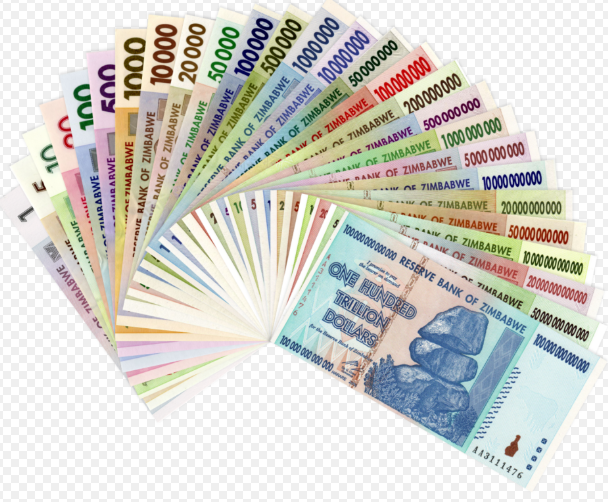

Bienvenidos a Wikipedia,
la enciclopedia de contenido libre que todos pueden editar.
2 106 068 artículos en español.
Billetes de Zimbabue
Los billetes de Zimbabue, emitidos por el Banco de la Reserva de Zimbabue (Reserve Bank of Zimbabwe), destacan por contar entre sus emisiones con el segundo billete con el mayor número de ceros en el mundo. Los billetes de Zimbabue se emitieron en cuatro representaciones de dólar zimbabuense ($ o Z$). El primer dólar (ZWD) reemplazó al dólar rodesiano en 1980, a la par de la proclamación de la independencia. La hiperinflación en Zimbabue provocó el cese de su fabricación, hecho que lo convirtió en el segundo billete más devaluado del mundo, solo superado por el pengő húngaro. La imagen principal en el anverso de los billetes regulares eran las Rocas equilibradas de Chiremba en Epworth, Harare. Por su inclusión en los cheques de emergencia al portador y en los «agrocheques», las rocas equilibradas se convirtieron en el emblema del Banco de la Reserva. El reverso de los billetes a menudo ilustra la cultura o los hitos del país.
